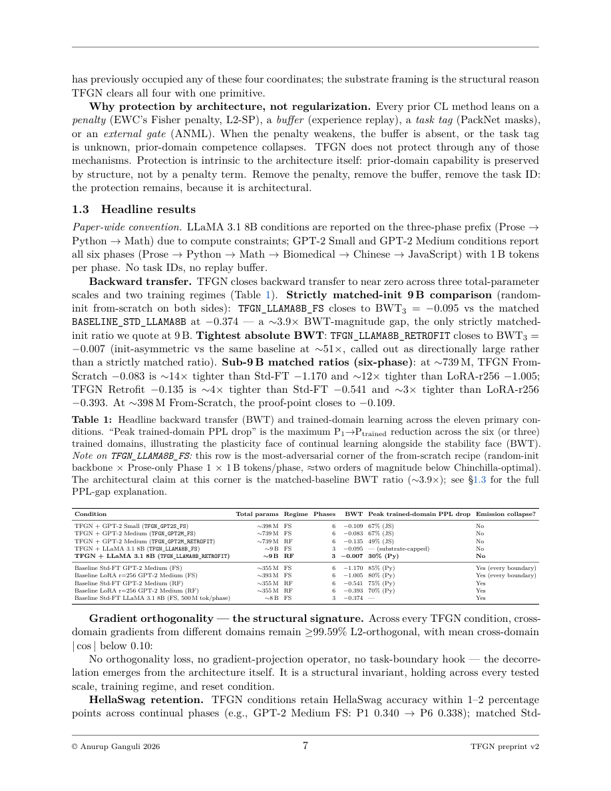

#1
★ 8/10
TFGN: Task-Free, Replay-Free Continual Pre-Training Without Catastrophic Forgetting at LLM Scale
TFGN：无任务、无回放的LLM规模持续预训练，解决灾难性遗忘问题

图 Figure · Page 7 of paper
🎯 无需回放或任务标签，首个在LLM规模下消除灾难性遗忘的架构
First architecture eliminating catastrophic forgetting in LLM-scale continual pre-training without replay or task labels.
| 维度 | 中文 | English |
|---|---|---|
| ❓ 待解决 的问题 |
大语言模型在跨多个异质文本领域持续预训练时，会严重"遗忘"先前学到的知识——这就是所谓的灾难性遗忘问题。现有解决方案依赖回放缓冲区（重复旧数据）、任务标识符或正则化惩罚，但这些方法在LLM规模下扩展性差，且在实际部署中往往无法获取任务标签。 | When large language models are continually pre-trained across heterogeneous text domains (e.g., code, math, biomedical text), they catastrophically forget previously learned knowledge. Existing solutions require replay buffers, task identifiers, or regularization penalties that do not scale to LLM-level parameter counts or realistic deployment scenarios where task labels are unavailable. |
| 💡 解决 的亮点 |
• **Read/Write 分解**：前向传播保持全密集计算，但跨域参数更新被结构化约束，使其不会写入先前域的参数子空间，从而从架构层面杜绝遗忘。 • **输入条件化、参数高效更新**：TFGN作为Transformer的架构叠加层，根据输入动态生成更新，无需任何任务标签或回放数据。 • **闭环元控制层（Extension A）**：引入自主学习的元控制器，在~398M规模下将遗忘再降低81%，对应神经科学中的System A / System M角色。 • **算子级潜在规划向量（Extension B）**：以99.96%余弦保真度跨30个源→目标对重塑前向传播行为，实现可操控的计划表示。 | • **Read/Write Decomposition**: The forward pass remains fully dense while cross-domain parameter updates are structurally prevented from overwriting prior-domain subspaces — forgetting is eliminated at the architecture level. • **Input-Conditioned, Parameter-Efficient Updates**: TFGN acts as an architectural overlay on any transformer, generating dynamic updates with zero reliance on task IDs or replay buffers. • **Closed-Loop Meta-Controller (Extension A)**: An autonomous learning meta-control layer further reduces forgetting by 81% at ~398M scale, mapping to neuroscience-inspired System A/System M roles. • **Operator-Level Plan Vector (Extension B)**: Reshapes forward-pass behavior across 30 source→target pairs at 99.96% cosine fidelity, enabling a controllable latent planner within the same substrate. |
| 🧪 实验 内容 |
实验覆盖六个异质文本域（散文、Python代码、数学、生物医学、中文、JavaScript），每阶段训练1B个token，在三个模型规模（~398M、~739M、~9B，包括GPT-2 Medium和LLaMA 3.1 8B）上分别进行从头训练（From-Scratch）和Retrofit两种设置。评估指标包括：反向迁移（Backward Transfer）、HellaSwag基准保留率、L2正交梯度分离度，以及各域的困惑度（PPL）。以无回放、无任务ID、无Fisher惩罚为对照条件，验证遗忘抑制和正向迁移能力。 | Experiments span six heterogeneous text domains (Prose, Python, Math, Biomedical, Chinese, JavaScript) with 1B tokens per phase, evaluated at three model scales (~398M, ~739M, ~9B including GPT-2 Medium and LLaMA 3.1 8B) under both From-Scratch and Retrofit settings. Key metrics include backward transfer score, HellaSwag benchmark retention, L2-orthogonal gradient separation between domain pairs, and per-domain perplexity (PPL). All experiments are conducted without replay buffers, task identifiers, or regularization penalties to validate forgetting suppression and positive forward transfer. |
| 📊 实验 结果 |
• **反向迁移**：LLaMA 3.1 8B Retrofit达到-0.007（接近于零，表明几乎无遗忘） • **HellaSwag保留率**：三个规模分别为0.506 / 0.504 / 0.510，与基线持平 • **梯度正交分离**：域对之间≥99.59% L2正交梯度分离，从数学上验证无干扰 • **正向迁移**：LLaMA-8B Retrofit中，仅凭Python训练使JavaScript PPL下降26.8%；GPT-2 Medium From-Scratch中下降62.0% • **Extension A**：~398M规模下遗忘额外减少81% • **Extension B**：在30个源→目标对上以99.96%余弦保真度重塑前向传播行为 | • **Backward Transfer**: -0.007 at LLaMA 3.1 8B Retrofit (near-zero, indicating almost no forgetting) • **HellaSwag Retention**: 0.506 / 0.504 / 0.510 across three scales, matching baseline performance • **Gradient Orthogonality**: ≥99.59% L2-orthogonal gradient separation between domain pairs, mathematically verifying non-interference • **Positive Forward Transfer**: JavaScript PPL drops 26.8% at LLaMA-8B Retrofit and 62.0% at GPT-2 Medium From-Scratch purely from Python training • **Extension A**: Additional 81% reduction in forgetting at ~398M scale • **Extension B**: 99.96% cosine fidelity across 30 source→target pairs for plan vector reshaping |
| 🏁 结论 | TFGN通过Read/Write分解这一架构创新，在不依赖回放、任务标签或正则化惩罚的情况下，首次在LLM规模（~9B参数）上同时实现了灾难性遗忘的消除、正向域迁移、闭环自主学习元控制和算子级潜在规划能力。这标志着持续预训练问题在实用规模上的重要突破，为下一代可持续学习的大语言模型提供了可部署的架构基础。 | TFGN demonstrates, for the first time at LLM scale (~9B parameters), that catastrophic forgetting can be eliminated architecturally — without replay, task labels, or regularization — while simultaneously enabling positive cross-domain forward transfer, closed-loop meta-control, and operator-level latent planning. This represents a significant milestone in making continual pre-training practically viable for real-world LLM deployment. |
| 🔗 论文 链接 |
arXiv: 2605.15053v1 · 📥 PDF | |
⚙️ Method · 方法详解
TFGN的核心是一种Read/Write分解机制：在正常前向传播中，模型仍以全密集方式运行；但在跨域参数更新时，通过将更新投影到与先前域子空间L2正交的方向，确保旧知识不被覆盖。该方法以架构叠加层的形式附加在标准Transformer之上，不修改主干网络，使其可直接用于已有模型的Retrofit（改装）或从头训练。Extension A在同一基础上增加闭环元控制层，自主调节学习信号；Extension B引入算子级计划向量，通过潜空间操控改变模型行为。
TFGN introduces a Read/Write decomposition: during forward passes the model runs as a standard dense transformer, but cross-domain parameter updates are projected onto directions L2-orthogonal to prior-domain subspaces, preventing overwriting of old knowledge. This mechanism is implemented as an architectural overlay that leaves the base transformer unchanged, making it applicable both for retrofitting existing models and training from scratch. Extension A adds a closed-loop meta-control layer on the same substrate to autonomously regulate learning signals, while Extension B introduces an operator-level plan vector that reshapes forward-pass behavior through latent-space manipulation.
📐 Key Formulas · 关键公式
\[\text{BWT} = \frac{1}{T-1}\sum_{i=1}^{T-1}(R_{T,i} - R_{i,i})\]
💡 反向迁移（BWT）衡量学习新任务后对旧任务性能的影响；TFGN在LLaMA 8B上达到-0.007，接近于零，表明几乎没有遗忘。
Backward Transfer (BWT) measures the impact on prior-task performance after learning new tasks; TFGN achieves -0.007 at LLaMA 8B, indicating near-zero forgetting.
\[\langle \nabla_{\theta} \mathcal{L}_i,\, \nabla_{\theta} \mathcal{L}_j \rangle \approx 0 \quad (\geq 99.59\%\text{ L2-orthogonal})\]
💡 跨域梯度的L2正交性约束：不同域的参数更新方向互相正交，从数学上保证域间无干扰，TFGN实现了≥99.59%的正交分离。
L2-orthogonal gradient separation between domain pairs: updates for different domains are projected to be mutually orthogonal in parameter space, mathematically guaranteeing non-interference — achieved at ≥99.59% by TFGN.
🌟 Why It Matters · 为什么重要
持续学习一直是将LLM部署到动态、多领域真实环境中的核心瓶颈，现有方法因依赖回放或任务标签而难以落地。TFGN提供了一个可直接Retrofit到现有模型的架构方案，有望使LLM像人类一样持续积累跨域知识，而不必在新旧知识之间反复权衡。
Continual learning has long been a critical bottleneck for deploying LLMs in dynamic, multi-domain real-world settings, where replay and task labels are often unavailable. TFGN's plug-in architectural overlay offers a practically deployable path toward LLMs that can accumulate knowledge across domains without sacrificing prior competencies — a key step toward truly lifelong learning AI systems.